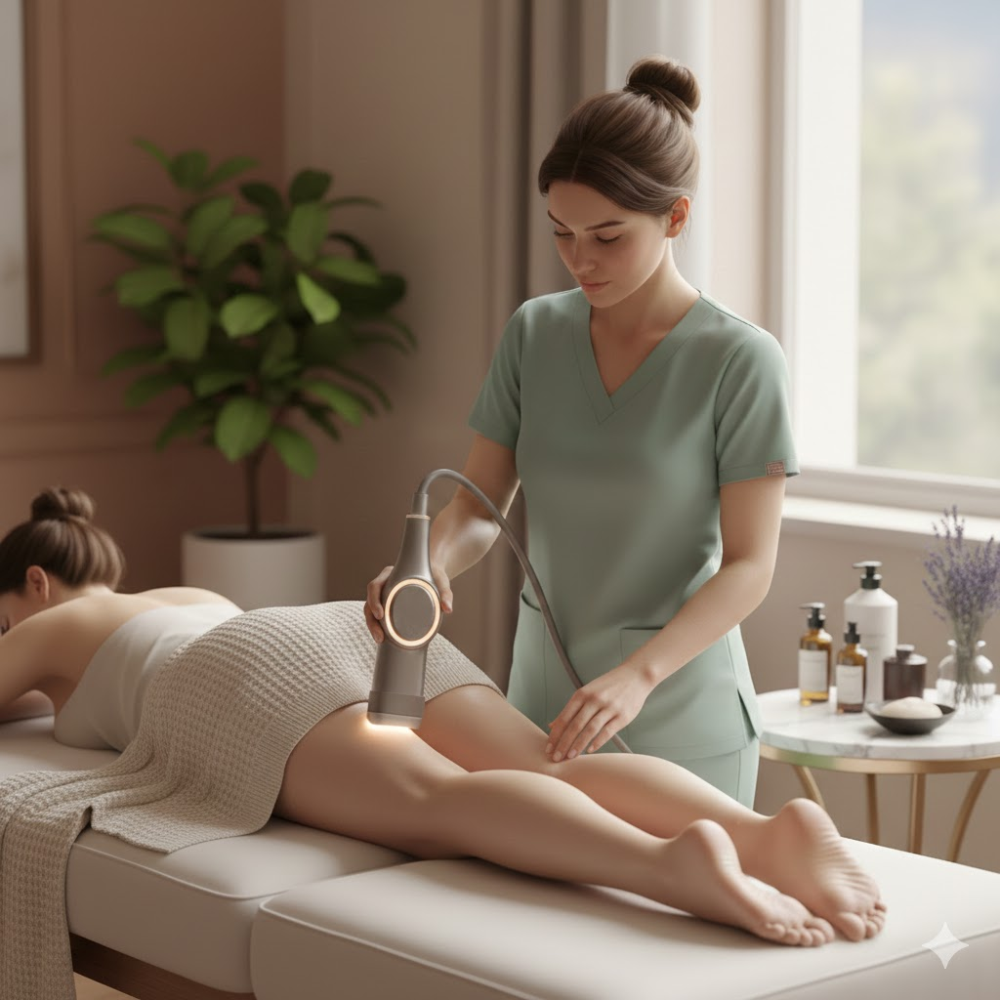
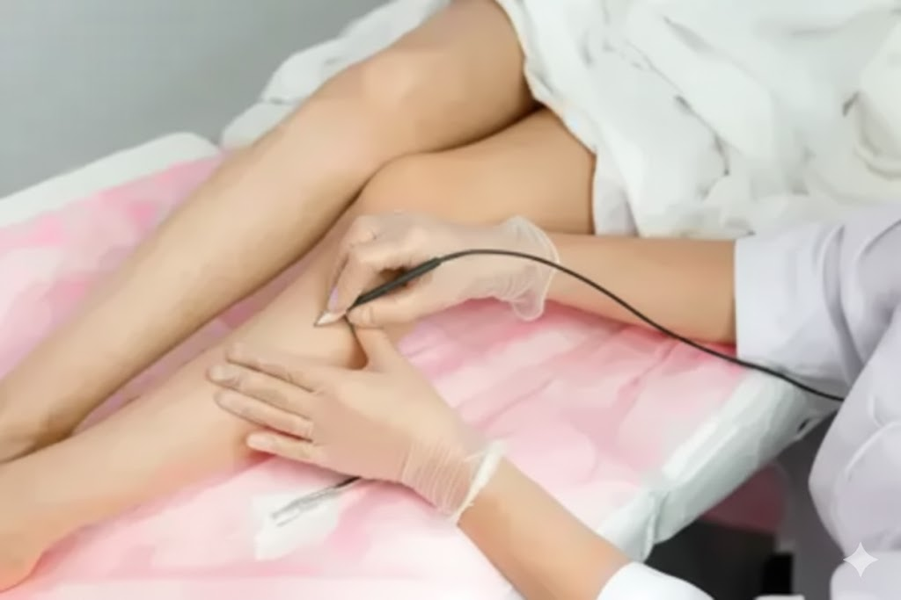
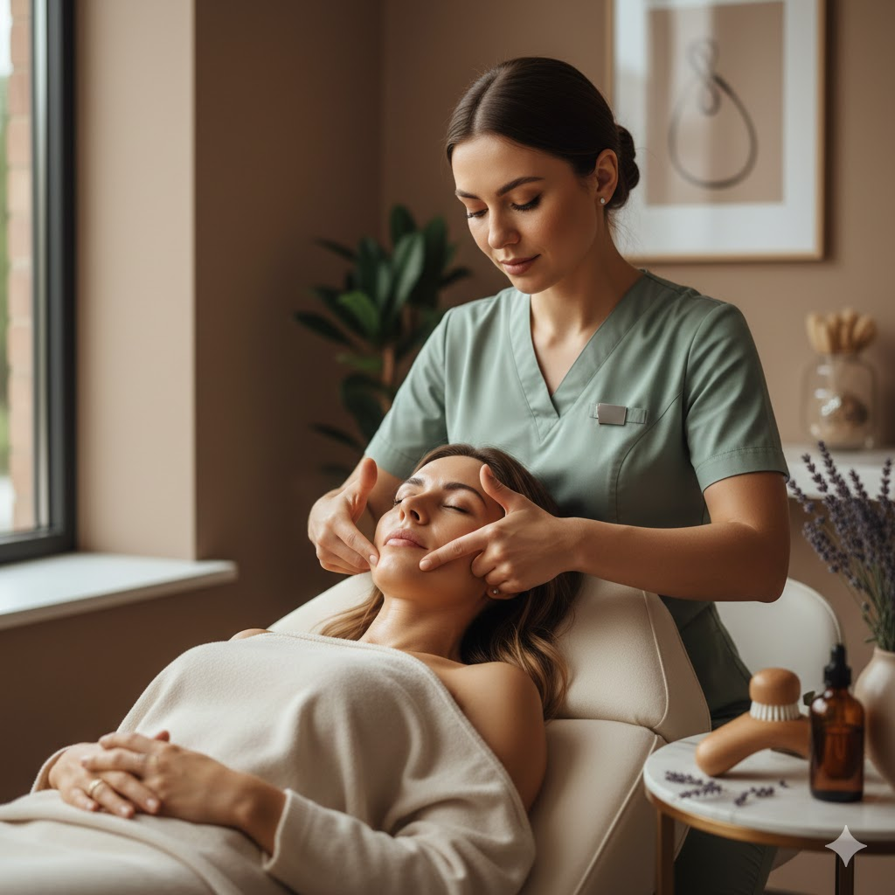
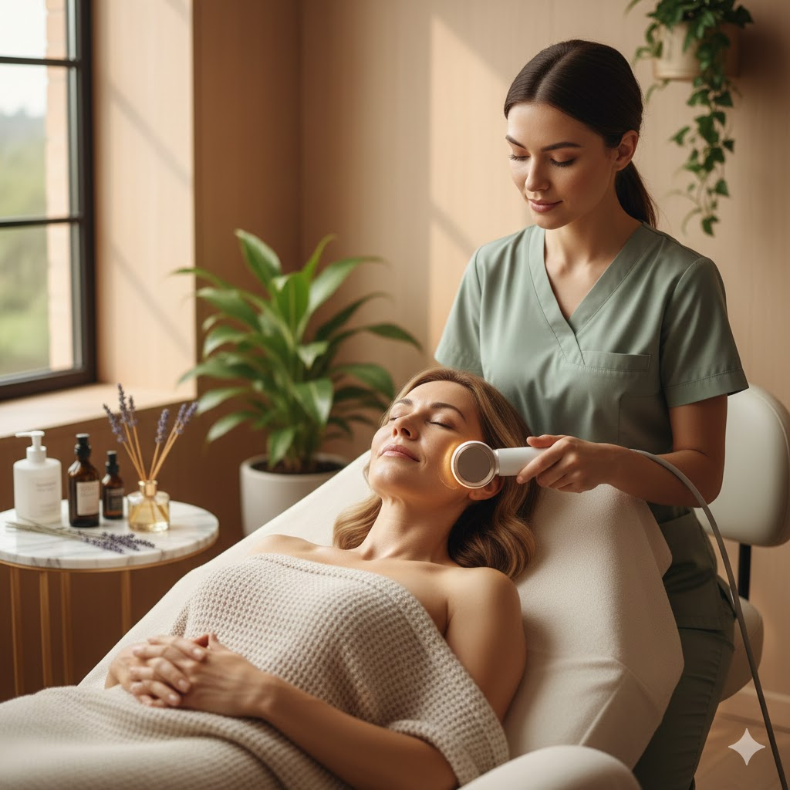

Electrolysis, Body Contouring, Buccal Facials & RF Facials in New Braunfels TX
Expert aesthetics inside Gruene Day Spa — the permanent alternative to laser and waxing, plus non-invasive body sculpting and anti-aging facials. Serving New Braunfels, Canyon Lake, San Marcos, Seguin, Schertz, Cibolo, and the greater San Antonio area.
Body Contouring & Sculpting

Ultrasonic Cavitation & RF
Non-invasive fat reduction and skin tightening.
Ultrasonic Cavitation uses low-frequency sound waves — typically between 40–50 kHz — to create microscopic bubbles (cavities) within the fluid surrounding your fat cells. These bubbles rapidly expand and collapse, generating enough pressure to rupture stubborn fat cell membranes without harming surrounding tissue, nerves, or skin. The liquefied fat is then released into the interstitial fluid and naturally processed and eliminated by your body's lymphatic system over the following 48–72 hours.
Radio Frequency (RF) is layered into the same session to address skin laxity. RF energy heats the dermis — the deeper structural layer of skin — to between 40–45°C, which triggers an immediate tightening response in existing collagen fibers and stimulates your body to produce new collagen over the weeks that follow. The result is firmer, smoother skin in the treated area, not just reduced volume.
What to expect during your session: You'll feel gentle warmth and a mild buzzing sensation — most clients find it deeply relaxing. Each session targets one area and typically runs 45–75 minutes depending on your package. The treatment is completely non-invasive: no needles, no anesthesia, no downtime.
After your session: Drinking plenty of water in the 48 hours following each appointment is essential — it helps your lymphatic system flush the released fat efficiently and maximizes your results. Mild redness or warmth in the treated area is normal and fades within a few hours.
Who is it for? Cavitation and RF are ideal for targeting areas resistant to diet and exercise — the abdomen, flanks, thighs, upper arms, and chin. It is not a weight loss treatment, but rather a body contouring and skin-tightening solution best suited for clients who are within a healthy weight range and looking to refine specific areas. A series of 6 sessions spaced 5–7 days apart is recommended for optimal, lasting results.
Comal Core
Abdomen, Love Handles & Lower Back
River Road Renewal
Full Torso · Front OR Back of Thigh
Colorado Curve
Front, Back & Inner Thigh
Lone Star Lift
Double Chin
Blanco Bliss
Arms & Bra Bulge
Hill Country Summit
Colorado Curve & Comal Core Combined
Enhance results by boosting lymphatic drainage and smoothing texture.
Electrolysis

Permanent Hair Removal
The only FDA-recognized method for total hair removal.
What electrolysis actually does: A certified electrologist inserts an ultra-fine, sterile probe — about the diameter of a natural hair — into the individual hair follicle opening, following the hair shaft down to its root. A precisely calibrated electrical current is then delivered to the follicle's dermal papilla (the growth center). This destroys the blood supply and regenerative cells that allow hair to regrow, permanently disabling that follicle.
The three modalities used in electrolysis: Galvanic electrolysis uses a direct current to produce sodium hydroxide within the follicle, chemically destroying the growth tissue. Thermolysis (also called shortwave or RF) uses alternating current to generate heat that cauterizes the follicle. Blend combines both for maximum effectiveness on coarse or curved follicles. Courtney selects the appropriate modality based on your hair type, skin condition, and treatment area.
Why it takes multiple sessions: Hair grows in cycles — anagen (active growth), catagen (transition), and telogen (resting). Electrolysis is most effective during the anagen phase, when the follicle is actively connected to its blood supply. Because hairs are always in different stages, a series of sessions spaced appropriately apart is required to catch each follicle during its active phase. Depending on the area and density, full clearance typically requires several months of consistent treatment.
What to expect during your appointment: You'll feel a brief warmth or slight pinch with each pulse — most clients describe it as very tolerable, especially with Courtney's meticulous technique and gentle approach. Sessions range from 15 minutes for small precision areas to 1 hour for larger regions. The treated area may appear slightly red or have minor swelling for a few hours afterward, which is completely normal.
Who is it for? Electrolysis is the only hair removal method recognized as truly permanent by both the FDA and the American Medical Association — and uniquely, it works on all skin tones, all hair colors (including white, gray, and blonde that laser cannot treat), and all body areas. It is particularly valued by clients with hormonal hair growth conditions, transgender clients seeking permanent facial or body hair removal, and anyone who has had unsatisfactory results from laser or waxing.
| Electrolysis | Laser | |
|---|---|---|
| Permanence | ✓ Truly permanent | ✗ Reduction only |
| All skin tones | ✓ Yes | ✗ Limited on dark skin |
| Blonde, gray & white hair | ✓ Yes | ✗ Cannot treat |
| FDA recognized as permanent | ✓ Yes | ✗ No |
| Precise small areas | ✓ Ideal | ✗ Less effective |
| Touch-ups required | ✓ None | ✗ Ongoing maintenance |
Electrolysis is the only method recognized by the FDA and the American Medical Association as a truly permanent form of hair removal.
Anti-Aging Rituals

Buccal Facial
This "inside-out" facial delivers a naturally lifted, defined look with immediate results — sharper cheekbones, refined jawline, and a radiant complexion.
What makes a buccal facial different: Most facials work from the outside in. A buccal facial works from the inside out — gloved hands access the buccal (inner cheek) cavity to directly massage the buccal fat pads, masseter muscle, and surrounding fascia from within the mouth, while simultaneously working the exterior facial muscles. This dual-access technique reaches layers of tissue that no topical treatment or standard facial massage can touch.
What happens during the session: After thorough cleansing and preparation, Courtney performs a precise intraoral massage targeting the buccal fat pad, the masseter (the jaw muscle most affected by tension and teeth grinding), the pterygoid muscles, and the fascia connecting the cheekbone to the jawline. This is combined with lymphatic drainage techniques along the neck and décolletage to reduce puffiness and enhance circulation. The session concludes with a nourishing topical treatment and facial massage.
Immediate results you'll see: Clients typically leave with noticeably more defined cheekbones, a slimmer-looking face, reduced jaw tension and puffiness, and a visible glow from the enhanced circulation. Many describe their face as looking more "sculpted" without looking done. Results are immediate because the massage physically redistributes fluid, releases tightened fascia, and stimulates lymphatic drainage — all of which show up right away.
Who benefits most: This treatment is ideal for clients who carry facial puffiness, have tension from jaw clenching or grinding (bruxism), want natural facial slimming and definition without fillers, or simply want the most thorough, results-oriented facial available. It is also popular for clients preparing for a special event who want a visible lift with zero downtime.

RF Facial
Rebuild natural collagen. Firm, smooth, and rejuvenate.
How RF energy rebuilds your skin: Radiofrequency facial treatment delivers controlled electromagnetic energy into the dermis — the structural layer beneath the surface of your skin — without disrupting the outer epidermis. When skin tissue absorbs RF energy, it heats to a therapeutic temperature (typically 40–45°C). This heat does two things: it causes immediate contraction and tightening of existing collagen fibers, producing a visible lift right away, and it triggers a wound-healing response that stimulates new collagen and elastin production over the following 3–6 months.
Collagen and why it matters: Collagen is the protein scaffolding responsible for skin's firmness and structure. Starting in our mid-20s, we lose roughly 1% of our collagen per year — accelerating with sun exposure, stress, and hormonal changes. RF facials are one of the most clinically validated non-invasive methods for actively rebuilding this lost collagen, improving not just the appearance of aging skin but its actual structural integrity.
What the session feels like: A conductive gel is applied to the treatment area, and the RF handpiece is glided smoothly across the skin in steady passes. You will feel consistent, comfortable warmth — similar to a heated facial massage. There is no sharp sensation, no redness that lasts beyond a few hours, and zero downtime. Most clients find it deeply relaxing.
Areas treated: RF facials are most commonly used on the full face, jawline, and neck — but can also address the décolletage. They are particularly effective for forehead lines, nasolabial folds, sagging jowls, and crepe-textured skin on the neck.
Who is it for? RF facials are suitable for all skin types and tones — unlike laser treatments, RF energy is not absorbed by melanin, so there is no risk of pigmentation issues. They are ideal for anyone in their late 20s and older noticing early signs of skin laxity, or for clients who want to maintain the results of previous treatments. A series of 3–6 sessions is recommended for significant improvement, with maintenance sessions every few months.
Serving the New Braunfels Region & Greater San Antonio
Refined Comfort Aesthetics is located inside Gruene Day Spa in New Braunfels, TX — conveniently positioned for clients across the region north, northeast, and east of San Antonio. We regularly serve clients seeking permanent hair removal in Canyon Lake, electrolysis in Seguin, body contouring near Schertz and Cibolo, buccal facials near San Antonio, RF facials from San Marcos, wood therapy in New Braunfels, and laser and waxing alternatives in Bulverde, Spring Branch, and Garden Ridge. Clients from Comal, Guadalupe, Hays, and Bexar County all find the drive well worth it.